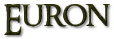

Euron Grejoy, conhecido como Olho de Corvo, é um membro da Casa Greyjoy. É o segundo filho de Lorde Quellon Greyjoy, o mais velho dos irmãos depois de Lorde Balon Greyjoy. Na série de televisão é interpretado pelo ator Pilou Asbæk.
Euron é o capitão do Silêncio, um navio tripulado inteiramente por mudos, cujas línguas foram cortadas pelo próprio Euron. Ele tem um brasão pessoal é um olho vermelho com uma pupila negra sob uma coroa de ferro negra sustentada por dois corvos.
Ele é um homem selvagem e imprevisível, conhecido por seu prazer em jogar perversos jogos mentais e promover uma guerra psicológica em qualquer um ao seu redor. Por esta razão, é odiado por todos seus irmãos. Euron é um habilidoso guerreiro e manipulador, astuto, sagaz e implacável.
Apesar de sua natureza perigosa e temperamental, Euron tem problemas em conduzir os homens à seu serviço. Enquanto a maioria dos homens de ferro que são capitães mantêm uma parte das pilhagens, Euron Greyjoy não toma nada para si.

Euron